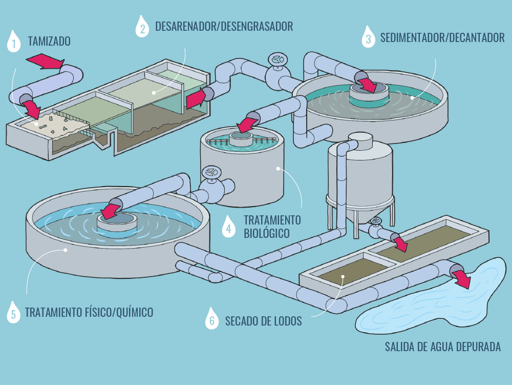
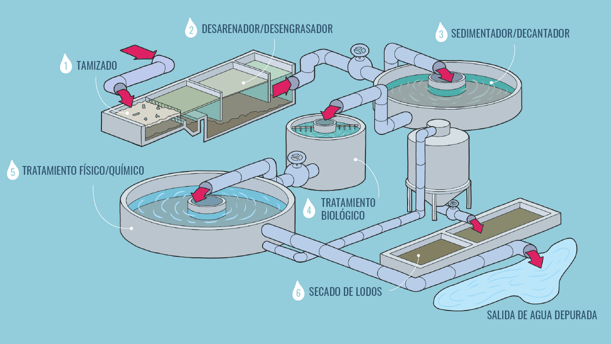
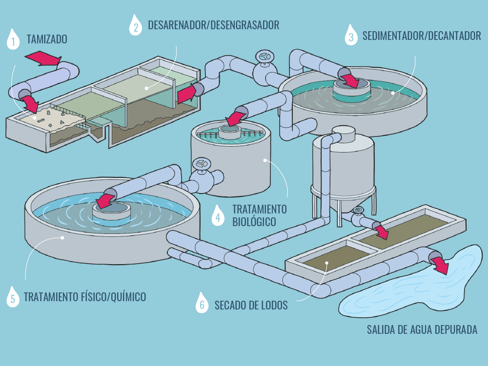
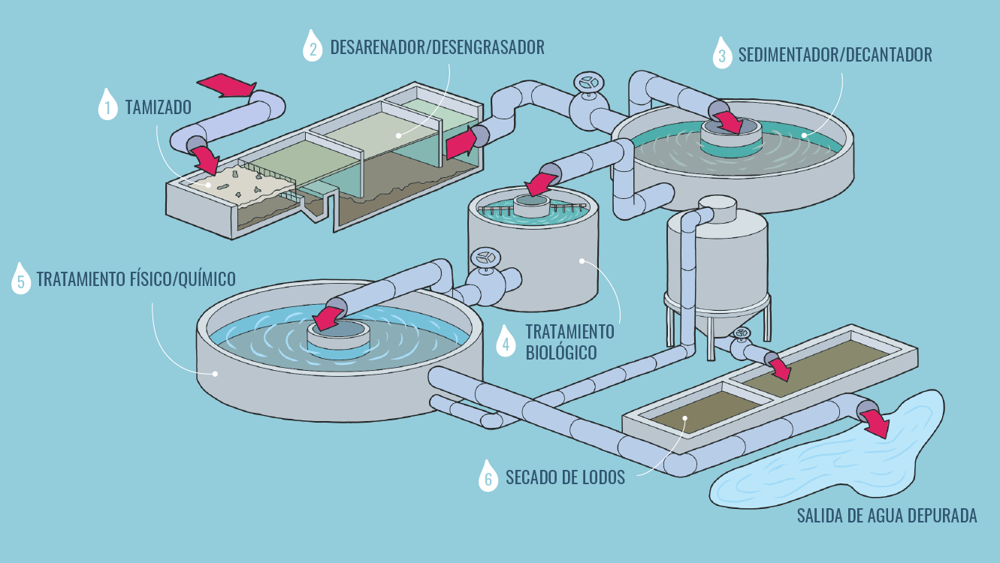

ODS 06 Agua Limpia y Saneamiento
Los Objetivos para el Desarrollo Sostenible (ODS) buscan conseguir un futuro sustentable para todos, exigiendo la transformación de los sistemas que rigen nuestra sociedad.
En específico, el 6º objetivo pretende garantizar la disponibilidad de agua, su gestión sostenible e higiene para todas las personas.
 


